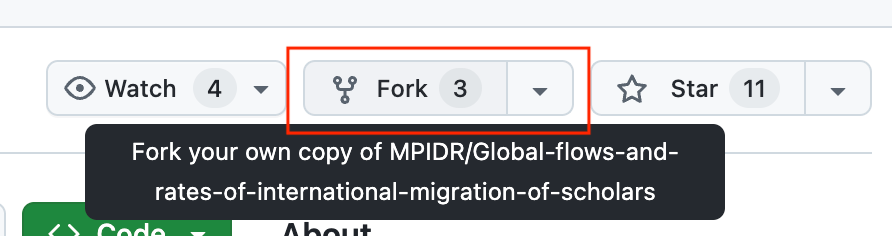
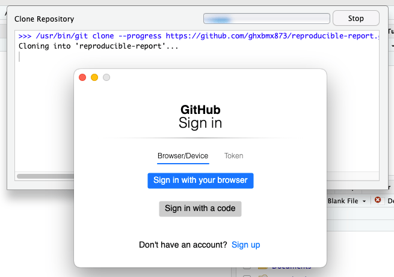

shiny::tags$iframe(src = "media/interactive/flowmap_widget.html", width = "100%", height = "600px")1. Workshop Task
Your task is to create a reproducible summary report with key statistics and a flowmap using the Scholarly Migration Database. This is a beginner level task.
If you are feeling especially confident, you can use the data from the The Human Migration Database, which you can download via the interactive web app (see last the tab for downloads). Warning: this is likely take more time than with the Scholarly Migration Database, as there are more data columns and you will spend more time reading the codebook. So only go for this task if the R programming part and Quarto are easy for your.
Final goal
The final goal is to have a repository on GitHub with:
a reproducible Quarto (
*.qmd) document in the root of the repositoryan
htmlfile created from the*.qmdfile above in thedocsfolder of the repositorya
README.mdfile in the root of the repository that briefly describes the project (e.g. specifies that this is an assignment done as part of EDSD linking back to EDSD website, or to this workshop materials, etc. )
Requirements:
The Quarto document can be rendered without errors into an
htmlfileThe document contains R code to load the data and perform any neccessary data transformation for visualisation. Instead of commenting the code, use plain or markdown-formatted text outside the code blocks.
The document contains at least two figures summarizing the flows data (e.g. a histogram, a scatter plot, etc.)
The document contains a flowmap
The document layout uses some of the custom figure placement options from Article Layout.
Step by step instructions
Make sure you went through the setup steps, and therefore have all the tools and a GitHub account.
1. Cloning the repository
1.1. Clone using your GitHub account
- Go to the repository of the Scholarly Migration Database and “Fork” it into your GitHub account.

Open
RStudioand create a new project.2.1. Choose “Version Control”:
2.2. Choose “Git” as your version control system:
2.3. Copy the link to your repository from the web and paste it in the prompt:
2.4. If this is your first time using git and GitHub on this computer, you should get a prompt like this:

You should choose the blue button “Sign in with your browser”.
2.5. Complete the authentication in the web browser with your GitHub account:
You only need to do this once, as this sets up your local git installation to use your GitHub acccount. So when you work with another online repository, you should just be able to access it without those extra steps.
1.2. Fallback if everything else fails, just download the repository
If nothing works for you, feel free to just download the Scholarly Migration Database repository manually.
2. Explore the data
- Create a new Quarto document in the root folder of the cloned or downloaded repository:
Either in the top left of RStudio:
Or in the bottom right in the Files pane:
Using the basic R and Quarto syntax (see intro reference of basic Quarto syntax here), list the packages you need to be loaded in the first chunk/block of code.
Use the more chunks/blocks of code to load the data (you may use either openalex_2024_V1_scholarlymigration_countryflows_enriched.csv or scopus_2024_V1_scholarlymigration_countryflows_enriched.csv) and explore it. You may ignore the code visibility options for now. Just leave default options for code blocks by not addint any options at this point. Use
dplyrfor data manipulation andggplot2for data visualization.
3. Spatial aspect of the migration data
Apart from the histograms, scatterplots or other plots, it is also useful to look at your data on a map like so:
The data in the Scholarly Migration Database does not contain coordinates, but has country names and their ISO codes. So you can combine this data with some other datasource that coordinates or boundaries for countries and their ISO codes.
3.1 Packages for spatial data and flow mapping
Here is a list of packages that you need to map the migration data:
packages <- c(
"sf", # for working with spatial data
"spData", # to easily get world boundaires
"countrycode", # to convert between iso2 and iso3 country codes
"flowmapblue", # for interactive flow mapping
"flowmapper" # for static flow mapping using ggplot2
)
install.packages(packages)library(sf)
library(spData)
library(countrycode)
library(flowmapblue)
library(flowmapper)
library(tidyverse)3.2. How to prepare the data for flow mapping
For mapping the flows you will need the coorindates of the countries.
An easy way to create these coordinates is by getting the data on country boundaries from the {spData} package:
countries <- spData::world
glimpse(countries)Rows: 177
Columns: 11
$ iso_a2 <chr> "FJ", "TZ", "EH", "CA", "US", "KZ", "UZ", "PG", "ID", "AR", …
$ name_long <chr> "Fiji", "Tanzania", "Western Sahara", "Canada", "United Stat…
$ continent <chr> "Oceania", "Africa", "Africa", "North America", "North Ameri…
$ region_un <chr> "Oceania", "Africa", "Africa", "Americas", "Americas", "Asia…
$ subregion <chr> "Melanesia", "Eastern Africa", "Northern Africa", "Northern …
$ type <chr> "Sovereign country", "Sovereign country", "Indeterminate", "…
$ area_km2 <dbl> 19289.97, 932745.79, 96270.60, 10036042.98, 9510743.74, 2729…
$ pop <dbl> 885806, 52234869, NA, 35535348, 318622525, 17288285, 3075770…
$ lifeExp <dbl> 69.96000, 64.16300, NA, 81.95305, 78.84146, 71.62000, 71.039…
$ gdpPercap <dbl> 8222.2538, 2402.0994, NA, 43079.1425, 51921.9846, 23587.3375…
$ geom <MULTIPOLYGON [°]> MULTIPOLYGON (((-180 -16.55..., MULTIPOLYGON ((…So this spatial data is just like a regular data.frame/tibble, but with an extra column with geometry data. Therefore, you can plot this data using ggplot2:
countries |>
ggplot() +
geom_sf()You can also include several layers in the same plot:
ggplot() +
geom_sf(data = countries) +
geom_sf(data = st_centroid(countries), color = "darkred")For flow mapping, you only one point per country, so you only need a center (or more formally a ‘centroid’) of each country’s polygon. Here is how you can do it:
countries_centroids <- countries |>
st_centroid() |> # finds a center of each country'spolygon
st_coordinates() |> # extracts numeric coorindates from the POINT geometry
as.data.frame() |> # converts the matrix to a data.frame
setNames(c("lon", "lat")) |> # renames the columns
cbind(countries) |> # adds back all the columns (except for geometry) form `countries`
select(iso_a2, lon, lat, name_long) # only selects a few columns that we really need
glimpse(countries_centroids)Rows: 177
Columns: 4
$ iso_a2 <chr> "FJ", "TZ", "EH", "CA", "US", "KZ", "UZ", "PG", "ID", "AR", …
$ lon <dbl> 178.56842, 34.74198, -12.18574, -96.39551, -103.57290, 67.23…
$ lat <dbl> -17.3156217, -6.2505643, 24.2783849, 60.4767578, 44.7559814,…
$ name_long <chr> "Fiji", "Tanzania", "Western Sahara", "Canada", "United Stat…You may freely reuse this code above in your Quarto report.
The data format you get is ideal for both {flowmapblue} and {flowmapper} packages. You only need to tweak the column names of the countries_centroids data.frame before using it with either of these packages. You can see relevant package documentation for more details. Alternatively, you can follow tutorials for {flowmapper} and {flowmapblue}.
3.3. Country codes
You will find that the country code data in the Scholarly Migration Database does not match with the country names in the countries data.frame. Scholarly migration database uses ISO 3166-1 alpha-3 codes, and countrycode uses the ISO 3166-1 alpha-2 codes. So you need to convert the country names in the countries data.frame to ISO 3166-1 alpha-3 codes.
You can do this conversion using the countrycode package like so:
library(countrycode)
# assuming your data.frame is called `scopus_country_flows`
scopus_country_flows <- scopus_country_flows |>
mutate(
iso2codefrom = countrycode(iso3codefrom,
origin = "iso3c",
destination = "iso2c"),
iso2codeto = countrycode(iso3codeto,
origin = "iso3c",
destination = "iso2c")
)3.4. Hints on plotting the flows
{flowmapper}
To plot the flows statically with {flowmapper}, you only need a regular code chunk, same as you would have for a ggplot2 plot.
Feel free to adapt this tutorial, but use the Scholarly Migration Database data instead of the mobility data used there.
{flowmapblue}
To create interactive flow maps with the {flowmapblue}, you will need a free MapBox account. Feel free to adapt this tutorial, but use the Scholarly Migration Database data instead of the mobility data used there.
To include the interactive plot with {flowmapblue}, you may need a somewhat more sophisticated code chunk. See the instructions below.
If you created an interactive flowmap like so:
flowmap <- flowmapblue(locations = locations, flows = flows, mapboxAccessToken = mapbox_access_token)But simply printing the flowmap object in a code block breaks your entire Quarto document, here is what you need to do.
Save the flowmap to an html file:
htmlwidgets::saveWidget(flowmap, "flowmap.html")Then include the html file in your Quarto document like so:
library(shiny)
shiny::tags$iframe(src = "flowmap_widget.html", width = "100%", height = "600px")4. Create your final document
Once you have figured out which summary plots and which flow map you would like to include in your final document, create a copy of your draft document that you were working with and clean it up. Only keep the code that you absolutely need for the document to be rendered without errors. Name this copy index.qmd.
Adjust the code visibility in your final document to your liking, using the Quarto documentation on HTML blokcs and code execution.
Create a file named _quarto.yaml in the root of the repository and add the following to it:
project:
output-dir: docsMake sure you respect the indentation (i.e. number of tabs/spaces before output-dir) of the YAML file.
Then render your final Quarto document into an html file, it should end up in the docs folder with the name index.html.
5. Submit
Post the link to your repository in issues of this repository: https://github.com/e-kotov/2024-EDSD-open-science-quarto-github/issues